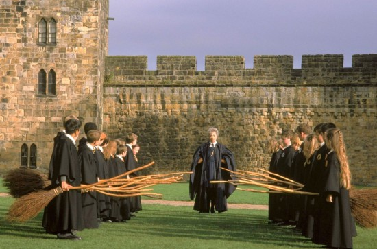
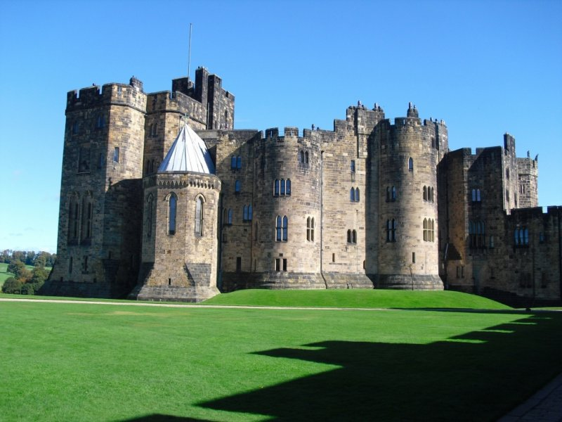

Castelo de Alnwick
Me diz uma coisa? suas aulas de voo de vassoura estão em dia? caso não agora eu tenho uma ótima recomendação para você treinar!
Erguido em 1906 por Yves de Vescy, barão de Alnwick, para defender o norte da Inglaterra das invasões escocesas, o Castelo de Alnwick serviu não só como fortaleza, mas também como cenário para meus filmes, sendo que o Castelo está localizo em Alnwick, Northumberland, Reino Unido.
O exterior do castelo foi utilizado nas filmagens de Hogwarts (apesar de muitas partes do castelo ter sido feitas por meio de computação gráfica). É na área externa do castelo que tive minha primeira aula de voo com a Madame Hooch, e Neville quebra o pulso ao cair de sua vassoura.
Foi um prazer estar com vocês durante essa jornada! Clique em Aparatar para voltar para a página principal ou se você acredita que acabei me esquecendo de indicar algum ponto turístico dos meus filmes clique em cadastrar.
Horário de funcionamento: Todos os dias das 10h00 ás 17h30
Melhor época para visitar: Todas as épocas do ano, pois é bem disputado por se cenário do filme Harry potter